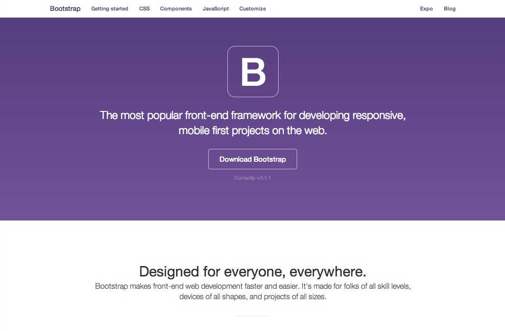
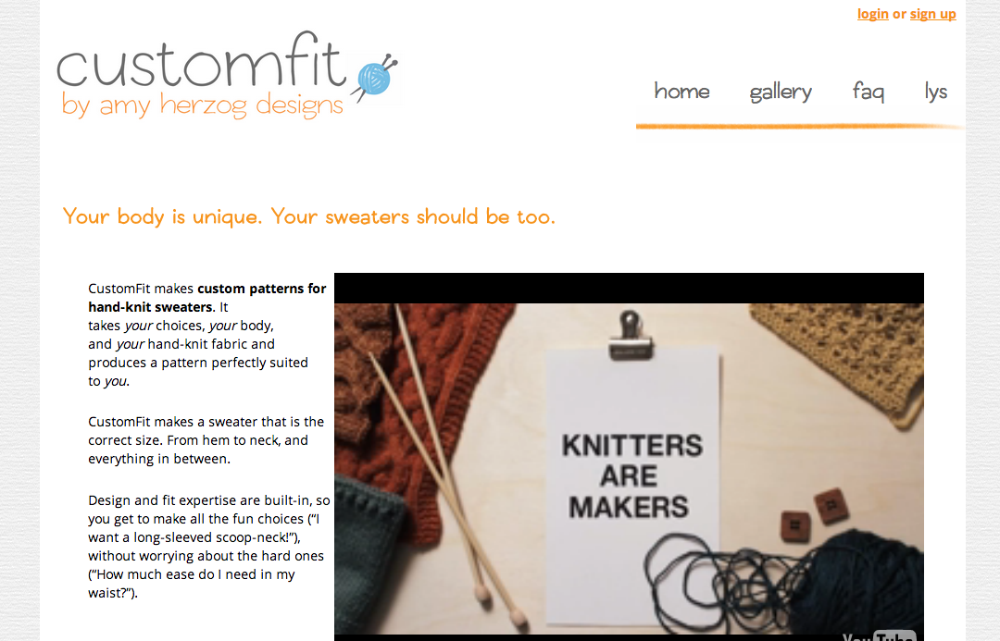
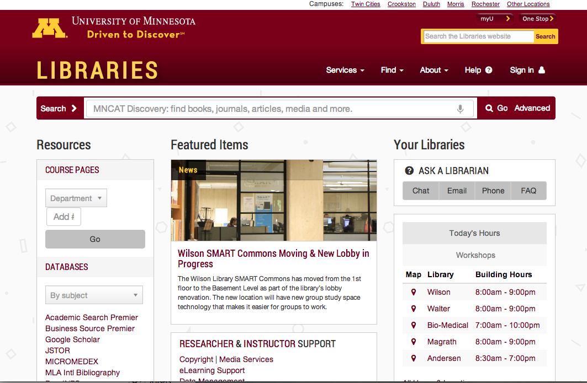
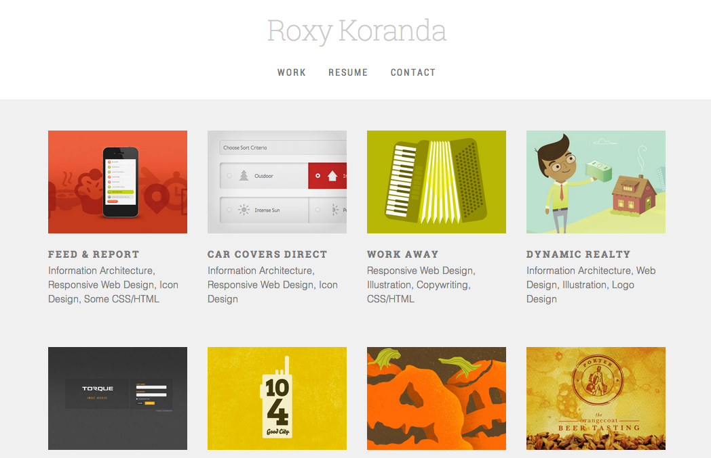

Yay Bootstrap!
What's Bootstrap?
A
web framework
An
open-source project
(Not actually run by Twitter)
Why is this great?
Responsive by default
Accessibility-aware
Tested on many browsers and devices
Lets you save time on web development and design stuff so you can focus on librarian stuff...
...while making it look like you hired a web developer and a designer
Examples
This very presentation
Bootstrap
(
screenshot
)
CustomFit
(
screenshot
)
University of Minnesota Libraries
(
screenshot
)
Roxy Koronda
(
screenshot
)
Yes, there are Bootstrap-based Drupal and WordPress themes!
Lots more at the
Bootstrap expo
Back home
On to setup
×

×

×

×
